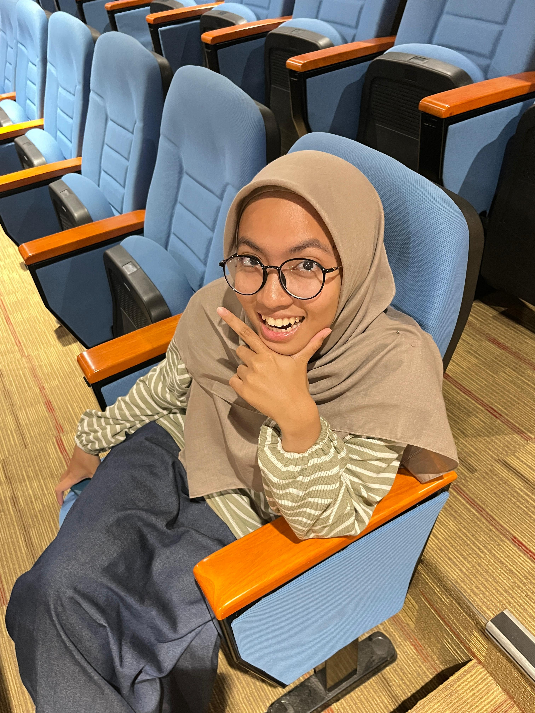

I'm Aisyah Putri Diza
Currently enjoying life while indulging in my hobbies like reading, watching movies, and exploring new interests. I believe in contributing to humanity in whatever small way I can.
I'm from South Tangerang, a city I'm proud to call home. Through this page I'll show you how beautiful my city is!
A bit about me:
- 📚 Love to read, mostly fiction and self development books
- 🎬 Like to watch movies from action to slice of life
- 💻 Currently learning UI/UX design and web development
- 🌱 Passionate about making a positive impact through my work